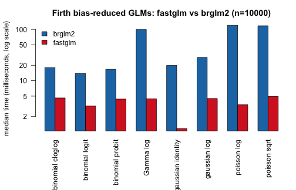
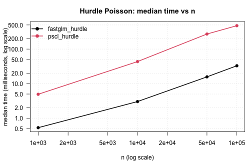
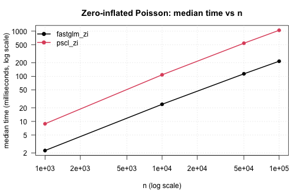

Benchmark Study for ‘fastglm’
Jared Huling
2026-05-27
Source:vignettes/benchmarks-fastglm.Rmd
benchmarks-fastglm.RmdThis vignette is a more comprehensive benchmarking study than the small inline timings in the other vignettes. It compares fastglm against the canonical reference implementations across a range of sample sizes and model classes:
- standard GLMs against
stats::glm(),glm2::glm.fit2(), andspeedglm::speedglm.wfit(), - the sparse and
big.matrixsolver paths against the dense path, - negative-binomial regression against
MASS::glm.nb(), - Firth bias-reduced GLMs against
brglm2::brglmFit()andlogistf::logistf(), including sparse, streaming, andbig.matrixFirth paths, - hurdle and zero-inflated count regressions against
pscl::hurdle()andpscl::zeroinfl().
The vignette is pre-compiled — the timings below
were produced once on the maintainer’s machine and are baked into the
shipped .Rmd. R CMD check / build does not re-run
the benchmarks, which keeps the package well within CRAN’s runtime
budget. To re-run the benchmarks (after a code change, on a different
machine, etc.), execute vignettes/_precompile.R from the
package root.
library(fastglm)
suppressPackageStartupMessages({
library(MASS)
library(pscl)
library(logistf)
library(brglm2)
library(speedglm)
library(Matrix)
library(bigmemory)
library(microbenchmark)
})
bench_unit <- "milliseconds"
.fmt <- function(mb) {
s <- summary(mb, unit = bench_unit)
s <- s[, c("expr", "min", "median", "mean", "max")]
names(s) <- c("expr", "min (ms)", "median (ms)", "mean (ms)", "max (ms)")
s
}
.collect <- function(mb, n) {
s <- summary(mb, unit = bench_unit)
data.frame(n = n, expr = as.character(s$expr), median = s$median,
stringsAsFactors = FALSE)
}
.plot_scaling <- function(df, title) {
methods <- unique(df$expr)
cols <- seq_along(methods)
op <- par(mar = c(4.2, 4.2, 3, 1), las = 1)
on.exit(par(op), add = TRUE)
plot(NA, log = "xy",
xlim = range(df$n), ylim = range(df$median),
xlab = "n (log scale)",
ylab = paste0("median time (", bench_unit, ", log scale)"),
main = title)
grid(equilogs = FALSE, col = "gray85")
for (k in seq_along(methods)) {
sub <- df[df$expr == methods[k], ]
sub <- sub[order(sub$n), ]
lines (sub$n, sub$median, col = cols[k], lwd = 2)
points(sub$n, sub$median, col = cols[k], pch = 19)
}
legend("topleft", legend = methods, col = cols,
pch = 19, lty = 1, lwd = 2, bty = "n")
}
sessionInfo()
#> R version 4.5.1 (2025-06-13)
#> Platform: aarch64-apple-darwin20
#> Running under: macOS Sequoia 15.7.3
#>
#> Matrix products: default
#> BLAS: /Library/Frameworks/R.framework/Versions/4.5-arm64/Resources/lib/libRblas.0.dylib
#> LAPACK: /Library/Frameworks/R.framework/Versions/4.5-arm64/Resources/lib/libRlapack.dylib; LAPACK version 3.12.1
#>
#> locale:
#> [1] en_US.UTF-8/en_US.UTF-8/en_US.UTF-8/C/en_US.UTF-8/en_US.UTF-8
#>
#> time zone: America/Chicago
#> tzcode source: internal
#>
#> attached base packages:
#> [1] stats graphics grDevices utils datasets methods base
#>
#> other attached packages:
#> [1] microbenchmark_1.5.0 bigmemory_4.6.4 speedglm_0.3-5
#> [4] biglm_0.9-3 DBI_1.2.3 Matrix_1.7-5
#> [7] brglm2_1.1.0 logistf_1.26.1 pscl_1.5.9
#> [10] MASS_7.3-65 fastglm_0.1.1
#>
#> loaded via a namespace (and not attached):
#> [1] shape_1.4.6.1 xfun_0.57 formula.tools_1.7.1
#> [4] lattice_0.22-7 numDeriv_2016.8-1.1 vctrs_0.7.2
#> [7] tools_4.5.1 Rdpack_2.6.4 generics_0.1.4
#> [10] enrichwith_0.5.0 sandwich_3.1-1 tibble_3.3.0
#> [13] pan_1.9 pkgconfig_2.0.3 jomo_2.7-6
#> [16] uuid_1.2-1 lifecycle_1.0.4 compiler_4.5.1
#> [19] statmod_1.5.1 codetools_0.2-20 glmnet_4.1-10
#> [22] mice_3.18.0 pillar_1.11.1 nloptr_2.2.1
#> [25] tidyr_1.3.1 reformulas_0.4.1 iterators_1.0.14
#> [28] rpart_4.1.24 boot_1.3-31 multcomp_1.4-28
#> [31] foreach_1.5.2 mitml_0.4-5 nlme_3.1-168
#> [34] tidyselect_1.2.1 mvtnorm_1.3-7 dplyr_1.1.4
#> [37] purrr_1.2.1 splines_4.5.1 operator.tools_1.6.3.1
#> [40] grid_4.5.1 cli_3.6.5 magrittr_2.0.4
#> [43] survival_3.8-3 broom_1.0.12 TH.data_1.1-3
#> [46] bigmemory.sri_0.1.8 backports_1.5.0 estimability_1.5.1
#> [49] emmeans_1.11.2 nnet_7.3-20 lme4_1.1-37
#> [52] zoo_1.8-14 evaluate_1.0.5 knitr_1.51
#> [55] rbibutils_2.3 mgcv_1.9-3 nleqslv_3.3.5
#> [58] rlang_1.1.7 Rcpp_1.1.1-1.1 xtable_1.8-4
#> [61] glue_1.8.0 minqa_1.2.8 R6_2.6.1Standard GLMs
Logistic regression with an increasing number of observations,
holding p = 30 fixed. Comparing the default
fastglm path (method = 0, pivoted QR), the
LLT-Cholesky path (method = 2),
stats::glm.fit(), glm2::glm.fit2(), and
speedglm::speedglm.wfit().
set.seed(1)
p <- 30
run_one_logit <- function(n) {
X <- matrix(rnorm(n * p), n, p)
beta <- rnorm(p) * 0.05
y <- rbinom(n, 1, plogis(X %*% beta))
microbenchmark(
fastglm_qr = fastglm(X, y, family = binomial(), method = 0),
fastglm_chol = fastglm(X, y, family = binomial(), method = 2),
glm.fit = glm.fit(X, y, family = binomial()),
glm2_fit2 = glm2::glm.fit2(X, y, family = binomial()),
speedglm = speedglm::speedglm.wfit(y = y, X = X,
family = binomial(),
intercept = FALSE),
times = 5L
)
}
logit_tim <- list()
for (n in c(1e3, 1e4, 1e5)) {
cat("\n--- n =", n, "---\n")
mb <- run_one_logit(n)
print(.fmt(mb))
logit_tim[[length(logit_tim) + 1]] <- .collect(mb, n)
}
#>
#> --- n = 1000 ---
#> expr min (ms) median (ms) mean (ms) max (ms)
#> 1 fastglm_qr 0.814178 0.840377 1.0302726 1.835201
#> 2 fastglm_chol 0.407499 0.437060 0.4445794 0.490442
#> 3 glm.fit 2.542164 2.741219 3.2153102 5.206713
#> 4 glm2_fit2 2.649010 2.706902 3.1439702 4.932997
#> 5 speedglm 1.901129 1.948853 2.6562588 5.489572
#>
#> --- n = 10000 ---
#> expr min (ms) median (ms) mean (ms) max (ms)
#> 1 fastglm_qr 9.035785 9.244516 9.219235 9.399209
#> 2 fastglm_chol 3.817182 4.067159 5.147083 7.060364
#> 3 glm.fit 26.703710 28.254740 28.411204 29.695931
#> 4 glm2_fit2 28.278438 29.838447 29.758587 30.884726
#> 5 speedglm 18.876605 20.634644 20.516703 21.866735
#>
#> --- n = 1e+05 ---
#> expr min (ms) median (ms) mean (ms) max (ms)
#> 1 fastglm_qr 94.45797 96.77181 97.43920 102.0181
#> 2 fastglm_chol 41.94234 43.42736 43.64336 46.0380
#> 3 glm.fit 284.13230 326.98791 338.71854 430.3533
#> 4 glm2_fit2 282.30566 330.86590 322.29955 338.4800
#> 5 speedglm 194.95307 200.74326 218.98994 253.5205
logit_tim <- do.call(rbind, logit_tim)
.plot_scaling(logit_tim, "Logistic regression: median time vs n (p = 30)")
The same comparison for Poisson regression with a log link:
run_one_poisson <- function(n) {
X <- matrix(rnorm(n * p), n, p)
beta <- rnorm(p) * 0.05
y <- rpois(n, exp(X %*% beta + 1))
microbenchmark(
fastglm_qr = fastglm(X, y, family = poisson(), method = 0),
fastglm_chol = fastglm(X, y, family = poisson(), method = 2),
glm.fit = glm.fit(X, y, family = poisson()),
glm2_fit2 = glm2::glm.fit2(X, y, family = poisson()),
speedglm = speedglm::speedglm.wfit(y = y, X = X,
family = poisson(),
intercept = FALSE),
times = 5L
)
}
pois_tim <- list()
for (n in c(1e3, 1e4, 1e5)) {
cat("\n--- n =", n, "---\n")
mb <- run_one_poisson(n)
print(.fmt(mb))
pois_tim[[length(pois_tim) + 1]] <- .collect(mb, n)
}
#>
#> --- n = 1000 ---
#> expr min (ms) median (ms) mean (ms) max (ms)
#> 1 fastglm_qr 0.821558 0.862271 0.8638290 0.905116
#> 2 fastglm_chol 0.461701 0.483759 0.4833244 0.512828
#> 3 glm.fit 2.610962 2.733757 2.7812432 2.957945
#> 4 glm2_fit2 2.708214 2.762580 2.7819976 2.930106
#> 5 speedglm 2.001743 2.176731 2.1828892 2.322568
#>
#> --- n = 10000 ---
#> expr min (ms) median (ms) mean (ms) max (ms)
#> 1 fastglm_qr 8.970759 9.997973 10.727215 14.682264
#> 2 fastglm_chol 3.632887 3.813738 4.198236 4.997244
#> 3 glm.fit 27.088823 28.157611 29.683188 32.856662
#> 4 glm2_fit2 27.685045 28.174954 28.769019 31.296653
#> 5 speedglm 20.020464 20.423576 20.401247 20.846614
#>
#> --- n = 1e+05 ---
#> expr min (ms) median (ms) mean (ms) max (ms)
#> 1 fastglm_qr 87.14702 88.71338 88.92693 90.54793
#> 2 fastglm_chol 37.15887 41.49143 51.18298 95.70085
#> 3 glm.fit 273.61846 278.11046 299.31023 382.50733
#> 4 glm2_fit2 281.06599 341.42389 340.61508 437.43101
#> 5 speedglm 201.79015 210.07244 226.30256 263.78400
pois_tim <- do.call(rbind, pois_tim)
.plot_scaling(pois_tim, "Poisson regression: median time vs n (p = 30)")
The Cholesky paths are 3–5x faster than glm.fit() at
moderate n and the gap widens with sample size — the IRLS
structure is the same, but each iteration’s WLS solve is materially
cheaper in RcppEigen than in compiled R + LAPACK.
speedglm is competitive at small n but its
single-threaded cross-product accumulation overtakes the savings as
n grows, since fastglm lets Eigen parallelize the
WLS solve.
Sparse and big.matrix paths
A sparse design matrix from one-hot encoding a 100-level factor
against a continuous covariate. The column count is
p = 200; fastglm on the dense matrix has to
materialise all 200 columns explicitly, while the sparse path only
operates on the non-zero entries:
set.seed(2)
n <- 5e4
g <- factor(sample.int(100, n, replace = TRUE))
xn <- rnorm(n)
Xd <- model.matrix(~ g * xn)
Xs <- as(Xd, "CsparseMatrix")
betas <- rnorm(ncol(Xd)) / 4
y <- rbinom(n, 1, plogis(Xd %*% betas))
mb_sparse <- microbenchmark(
fastglm_dense = fastglm(Xd, y, family = binomial(), method = 2),
fastglm_sparse = fastglm(Xs, y, family = binomial(), method = 2),
times = 5L
)
print(.fmt(mb_sparse))
#> expr min (ms) median (ms) mean (ms) max (ms)
#> 1 fastglm_dense 218.4417 219.5026 223.2900 231.7417
#> 2 fastglm_sparse 255.6885 257.9629 277.3992 339.6492
cat("ncol(Xd) =", ncol(Xd), " fraction nonzero =",
round(length(Xs@x) / prod(dim(Xs)), 3), "\n")
#> ncol(Xd) = 200 fraction nonzero = 0.02A big.matrix comparison on a moderately large dense
design — n = 5e5, p = 20. The on-disc
big.matrix runs in row-blocks but produces identical
estimates:
set.seed(3)
n <- 5e5
p <- 20
X <- matrix(rnorm(n * p), n, p)
Xb <- as.big.matrix(X)
y <- rbinom(n, 1, plogis(X %*% rnorm(p) * 0.05))
mb_big <- microbenchmark(
dense = fastglm(X, y, family = binomial(), method = 2),
big.matrix = fastglm(Xb, y, family = binomial(), method = 2),
times = 3L
)
print(.fmt(mb_big))
#> expr min (ms) median (ms) mean (ms) max (ms)
#> 1 dense 142.7995 144.3081 147.2925 154.7700
#> 2 big.matrix 149.8009 150.0625 151.0845 153.3899
f1 <- fastglm(X, y, family = binomial(), method = 2)
f2 <- fastglm(Xb, y, family = binomial(), method = 2)
cat("max coef diff:", max(abs(coef(f1) - coef(f2))), "\n")
#> max coef diff: 1.235123e-15The dense path is faster for matrices that fit in RAM (the row-block
reads have non-zero overhead), but the big.matrix path is
the only viable option once the design exceeds available memory.
Negative-binomial regression
fastglm_nb() against MASS::glm.nb() across
a range of sample sizes. The data-generating process is
NB(mu, theta = 2) with three covariates and an
intercept:
set.seed(4)
run_one_nb <- function(n) {
X <- cbind(1, matrix(rnorm(n * 3), n, 3))
mu <- exp(X %*% c(0.5, 0.4, -0.2, 0.3))
y <- MASS::rnegbin(n, mu = mu, theta = 2)
df <- data.frame(y = y, x1 = X[, 2], x2 = X[, 3], x3 = X[, 4])
microbenchmark(
fastglm_nb = fastglm_nb(X, y),
glm.nb = MASS::glm.nb(y ~ x1 + x2 + x3, data = df),
times = 5L
)
}
nb_tim <- list()
for (n in c(1e3, 1e4, 1e5, 5e5)) {
cat("\n--- n =", n, "---\n")
mb <- run_one_nb(n)
print(.fmt(mb))
nb_tim[[length(nb_tim) + 1]] <- .collect(mb, n)
}
#>
#> --- n = 1000 ---
#> expr min (ms) median (ms) mean (ms) max (ms)
#> 1 fastglm_nb 0.682240 0.765306 0.8300368 1.100358
#> 2 glm.nb 7.274835 7.453636 7.4239028 7.490864
#>
#> --- n = 10000 ---
#> expr min (ms) median (ms) mean (ms) max (ms)
#> 1 fastglm_nb 7.160486 11.09415 10.32162 11.87975
#> 2 glm.nb 57.768180 59.11031 62.14795 68.69858
#>
#> --- n = 1e+05 ---
#> expr min (ms) median (ms) mean (ms) max (ms)
#> 1 fastglm_nb 64.22326 66.32877 68.20897 78.70184
#> 2 glm.nb 499.97466 509.85091 534.50479 588.59686
#>
#> --- n = 5e+05 ---
#> expr min (ms) median (ms) mean (ms) max (ms)
#> 1 fastglm_nb 338.1368 345.7159 347.7577 360.6254
#> 2 glm.nb 2014.3564 2091.0658 2082.6364 2177.4795
nb_tim <- do.call(rbind, nb_tim)
.plot_scaling(nb_tim, "Negative-binomial joint MLE: median time vs n")
Accuracy on the largest case: coefficients and theta
agree to floating-point precision against glm.nb, since
both maximize the same likelihood. The runtime difference is structural
— glm.nb runs its IRLS + theta-MLE alternation in R,
fastglm_nb runs both loops in C++.
set.seed(99)
n <- 5e5
X <- cbind(1, matrix(rnorm(n * 3), n, 3))
mu <- exp(X %*% c(0.5, 0.4, -0.2, 0.3))
y <- MASS::rnegbin(n, mu = mu, theta = 2)
df <- data.frame(y = y, x1 = X[, 2], x2 = X[, 3], x3 = X[, 4])
f_nb <- fastglm_nb(X, y)
m_nb <- MASS::glm.nb(y ~ x1 + x2 + x3, data = df)
cat("coef max abs diff:", max(abs(unname(coef(f_nb)) - unname(coef(m_nb)))), "\n")
#> coef max abs diff: 2.198242e-14
cat("theta diff :", abs(f_nb$theta - m_nb$theta), "\n")
#> theta diff : 9.67848e-12
cat("logLik diff :",
abs(as.numeric(logLik(f_nb)) - as.numeric(logLik(m_nb))), "\n")
#> logLik diff : 2.095476e-09Firth bias-reduced GLMs
Firth bias reduction (Firth, 1993; Kosmidis and Firth, 2009) is now
supported for all standard GLM families via firth = TRUE.
We benchmark against brglm2::brglmFit(type = "AS_mean"),
which implements the same AS_mean adjustment, and against
logistf::logistf() for the binomial-logit special case.
First, the canonical logistic benchmark on the sex2 dataset and a larger simulated example:
data(sex2, package = "logistf")
X_sex2 <- model.matrix(~ age + oc + vic + vicl + vis + dia, data = sex2)
y_sex2 <- sex2$case
mb_firth_logistf <- microbenchmark(
fastglm = fastglm(X_sex2, y_sex2, family = binomial(), firth = TRUE),
logistf = logistf(case ~ age + oc + vic + vicl + vis + dia, data = sex2),
brglm2 = glm(case ~ age + oc + vic + vicl + vis + dia, data = sex2,
family = binomial(), method = "brglmFit", type = "AS_mean"),
times = 10L
)
cat("\n--- Heinze-Schemper sex2 (n =", nrow(sex2), ") ---\n")
#>
#> --- Heinze-Schemper sex2 (n = 239 ) ---
print(.fmt(mb_firth_logistf))
#> expr min (ms) median (ms) mean (ms) max (ms)
#> 1 fastglm 0.255840 0.2977215 0.3056796 0.410082
#> 2 logistf 6.808460 7.2490050 7.3370607 8.907332
#> 3 brglm2 2.737611 2.9573505 3.1318014 5.136767Next, a comprehensive comparison of
fastglm(firth = TRUE) against brglm2 across
all supported families and links. We fix n = 10000 and
p = 5 to see the per-family speedup:
set.seed(123)
n <- 10000; p_firth <- 5
X_firth <- cbind(1, matrix(rnorm(n * p_firth), n, p_firth))
eta_firth <- X_firth %*% c(0.5, 0.3, -0.2, 0.1, 0.05, -0.1)
firth_families <- list(
list(fam = binomial("logit"), label = "binomial logit",
y = rbinom(n, 1, plogis(eta_firth))),
list(fam = binomial("probit"), label = "binomial probit",
y = rbinom(n, 1, plogis(eta_firth))),
list(fam = binomial("cloglog"), label = "binomial cloglog",
y = rbinom(n, 1, plogis(eta_firth))),
list(fam = poisson("log"), label = "poisson log",
y = rpois(n, exp(eta_firth))),
list(fam = poisson("sqrt"), label = "poisson sqrt",
y = rpois(n, exp(eta_firth))),
list(fam = Gamma("log"), label = "Gamma log",
y = rgamma(n, shape = 5, rate = 5 / exp(eta_firth))),
list(fam = gaussian("identity"), label = "gaussian identity",
y = as.numeric(eta_firth) + rnorm(n, 0, 0.5)),
list(fam = gaussian("log"), label = "gaussian log",
y = pmax(as.numeric(eta_firth) + rnorm(n, 0, 0.5), 0.01))
)
xnames <- paste0("x", seq_len(p_firth))
df_firth <- data.frame(X_firth[, -1])
names(df_firth) <- xnames
fml_firth <- as.formula(paste("y ~", paste(xnames, collapse = " + ")))
firth_all_tim <- list()
for (fi in firth_families) {
df_firth$y <- fi$y
mb <- microbenchmark(
fastglm = fastglm(X_firth, fi$y, family = fi$fam, firth = TRUE),
brglm2 = glm(fml_firth, data = df_firth, family = fi$fam,
method = "brglmFit", type = "AS_mean"),
times = 10L
)
s <- summary(mb, unit = bench_unit)
cat(sprintf("%-20s fastglm=%7.2f ms brglm2=%7.2f ms speedup=%5.1fx\n",
fi$label, s$median[1], s$median[2], s$median[2] / s$median[1]))
firth_all_tim[[length(firth_all_tim) + 1]] <-
transform(.collect(mb, n), family = fi$label)
}
#> binomial logit fastglm= 3.20 ms brglm2= 13.82 ms speedup= 4.3x
#> binomial probit fastglm= 4.38 ms brglm2= 16.65 ms speedup= 3.8x
#> binomial cloglog fastglm= 4.61 ms brglm2= 17.95 ms speedup= 3.9x
#> poisson log fastglm= 3.39 ms brglm2= 120.02 ms speedup= 35.4x
#> poisson sqrt fastglm= 4.93 ms brglm2= 117.49 ms speedup= 23.9x
#> Gamma log fastglm= 4.42 ms brglm2= 99.60 ms speedup= 22.5x
#> gaussian identity fastglm= 1.17 ms brglm2= 19.82 ms speedup= 17.0x
#> gaussian log fastglm= 4.49 ms brglm2= 28.43 ms speedup= 6.3x
firth_all_tim <- do.call(rbind, firth_all_tim)A grouped barplot showing the median time for each family:
op <- par(mar = c(7, 4.2, 3, 1), las = 2)
m <- with(firth_all_tim, tapply(median, list(expr, family), identity))
barplot(m, beside = TRUE, log = "y",
col = c("#1f77b4", "#d62728"),
ylab = paste0("median time (", bench_unit, ", log scale)"),
main = paste0("Firth bias-reduced GLMs: fastglm vs brglm2 (n=", n, ")"),
legend.text = rownames(m),
args.legend = list(x = "topleft", bty = "n"))
par(op)Scaling with sample size for a representative subset of families:
set.seed(123)
firth_scaling_fams <- list(
list(fam = binomial("logit"), label = "binomial logit"),
list(fam = poisson("log"), label = "poisson log"),
list(fam = Gamma("log"), label = "Gamma log"),
list(fam = gaussian("identity"), label = "gaussian identity")
)
firth_scale_tim <- list()
for (n_val in c(1e3, 1e4, 5e4)) {
X_s <- cbind(1, matrix(rnorm(n_val * p_firth), n_val, p_firth))
eta_s <- X_s %*% c(0.5, 0.3, -0.2, 0.1, 0.05, -0.1)
df_s <- data.frame(X_s[, -1])
names(df_s) <- xnames
cat(sprintf("\n--- n = %d ---\n", n_val))
for (fi in firth_scaling_fams) {
y_s <- switch(fi$fam$family,
"binomial" = rbinom(n_val, 1, plogis(eta_s)),
"poisson" = rpois(n_val, exp(eta_s)),
"Gamma" = rgamma(n_val, shape = 5, rate = 5 / exp(eta_s)),
"gaussian" = as.numeric(eta_s) + rnorm(n_val, 0, 0.5)
)
df_s$y <- y_s
mb <- microbenchmark(
fastglm = fastglm(X_s, y_s, family = fi$fam, firth = TRUE),
brglm2 = glm(fml_firth, data = df_s, family = fi$fam,
method = "brglmFit", type = "AS_mean"),
times = 5L
)
s <- summary(mb, unit = bench_unit)
cat(sprintf(" %-20s fastglm=%7.2f ms brglm2=%7.2f ms\n",
fi$label, s$median[1], s$median[2]))
firth_scale_tim[[length(firth_scale_tim) + 1]] <-
transform(.collect(mb, n_val), family = fi$label)
}
}
#>
#> --- n = 1000 ---
#> binomial logit fastglm= 0.37 ms brglm2= 2.37 ms
#> poisson log fastglm= 0.42 ms brglm2= 13.57 ms
#> Gamma log fastglm= 0.44 ms brglm2= 11.62 ms
#> gaussian identity fastglm= 0.52 ms brglm2= 3.47 ms
#>
#> --- n = 10000 ---
#> binomial logit fastglm= 3.81 ms brglm2= 13.07 ms
#> poisson log fastglm= 3.54 ms brglm2= 119.40 ms
#> Gamma log fastglm= 4.71 ms brglm2= 95.07 ms
#> gaussian identity fastglm= 1.15 ms brglm2= 20.10 ms
#>
#> --- n = 50000 ---
#> binomial logit fastglm= 17.11 ms brglm2= 71.58 ms
#> poisson log fastglm= 19.66 ms brglm2= 598.03 ms
#> Gamma log fastglm= 21.66 ms brglm2= 506.24 ms
#> gaussian identity fastglm= 5.74 ms brglm2= 103.94 ms
firth_scale_tim <- do.call(rbind, firth_scale_tim)
# one panel per family
op <- par(mfrow = c(2, 2), mar = c(4, 4.2, 2.5, 1), las = 1)
for (flab in unique(firth_scale_tim$family)) {
sub <- firth_scale_tim[firth_scale_tim$family == flab, ]
.plot_scaling(sub, paste0("Firth ", flab))
}
par(op)Firth across all decomposition methods
Firth bias reduction now works with all six decomposition methods (0–5), not just the LLT Cholesky. Here we verify that all methods produce identical coefficients and compare their timings:
set.seed(123)
n_meth <- 10000; p_meth <- 10
X_meth <- cbind(1, matrix(rnorm(n_meth * (p_meth - 1)), n_meth, p_meth - 1))
y_meth <- rbinom(n_meth, 1, plogis(X_meth %*% rnorm(p_meth) * 0.1))
ref_coef <- coef(fastglm(X_meth, y_meth, family = binomial(), method = 2, firth = TRUE))
method_names <- c("ColPivQR", "QR", "LLT", "LDLT", "FullPivQR", "SVD")
for (m in c(0L, 1L, 3L, 4L, 5L)) {
d <- max(abs(coef(fastglm(X_meth, y_meth, family = binomial(), method = m,
firth = TRUE)) - ref_coef))
cat(sprintf(" method %d (%s) vs LLT: max |diff| = %.2e\n",
m, method_names[m + 1], d))
}
#> method 0 (ColPivQR) vs LLT: max |diff| = 5.83e-16
#> method 1 (QR) vs LLT: max |diff| = 6.38e-16
#> method 3 (LDLT) vs LLT: max |diff| = 1.11e-16
#> method 4 (FullPivQR) vs LLT: max |diff| = 6.66e-16
#> method 5 (SVD) vs LLT: max |diff| = 2.90e-16
mb_methods <- microbenchmark(
ColPivQR = fastglm(X_meth, y_meth, family = binomial(), method = 0, firth = TRUE),
QR = fastglm(X_meth, y_meth, family = binomial(), method = 1, firth = TRUE),
LLT = fastglm(X_meth, y_meth, family = binomial(), method = 2, firth = TRUE),
LDLT = fastglm(X_meth, y_meth, family = binomial(), method = 3, firth = TRUE),
FullPivQR= fastglm(X_meth, y_meth, family = binomial(), method = 4, firth = TRUE),
SVD = fastglm(X_meth, y_meth, family = binomial(), method = 5, firth = TRUE),
times = 5L
)
cat(sprintf("\n--- Firth logistic, n=%d, p=%d ---\n", n_meth, p_meth))
#>
#> --- Firth logistic, n=10000, p=10 ---
print(.fmt(mb_methods))
#> expr min (ms) median (ms) mean (ms) max (ms)
#> 1 ColPivQR 5.824173 6.964875 7.052623 7.998116
#> 2 QR 5.723559 6.578983 6.470136 7.566837
#> 3 LLT 4.114678 4.943903 5.083926 5.922204
#> 4 LDLT 4.015253 5.763944 5.633712 7.315876
#> 5 FullPivQR 2266.558556 2275.998642 2288.749527 2328.341866
#> 6 SVD 11.065531 13.015122 12.881757 14.022533All six methods agree to machine precision. The LLT and LDLT Cholesky
methods are the fastest because they only decompose the
p x p cross-product, while the QR and SVD methods work with
the full n x p matrix.
Firth on sparse and streaming designs
Firth bias reduction is now also supported on sparse
(dgCMatrix), big.matrix, and streaming
callback designs. The sparse and streaming paths use lagged
leverages from the previous IRLS iteration; at convergence, the
result matches the exact-leverage dense path.
set.seed(123)
n_sp <- 5000; p_sp <- 6
X_sp <- cbind(1, matrix(rnorm(n_sp * (p_sp - 1)), n_sp, p_sp - 1))
Xs_sp <- as(X_sp, "CsparseMatrix")
Xb_sp <- as.big.matrix(X_sp)
y_sp <- rbinom(n_sp, 1, plogis(X_sp %*% c(-0.3, 0.4, -0.2, 0.1, 0.05, -0.15)))
chunk_size_sp <- 500
chunks_sp <- function(k) {
idx <- ((k - 1) * chunk_size_sp + 1):(k * chunk_size_sp)
list(X = X_sp[idx, , drop = FALSE], y = y_sp[idx])
}
mb_backends <- microbenchmark(
dense = fastglm(X_sp, y_sp, family = binomial(), method = 2, firth = TRUE),
sparse = fastglm(Xs_sp, y_sp, family = binomial(), method = 2, firth = TRUE),
big.matrix = fastglm(Xb_sp, y_sp, family = binomial(), method = 2, firth = TRUE),
streaming = fastglm_streaming(chunks_sp, n_chunks = n_sp / chunk_size_sp,
family = binomial(), method = 2, firth = TRUE),
times = 5L
)
cat(sprintf("\n--- Firth logistic across backends (n=%d, p=%d) ---\n", n_sp, p_sp))
#>
#> --- Firth logistic across backends (n=5000, p=6) ---
print(.fmt(mb_backends))
#> expr min (ms) median (ms) mean (ms) max (ms)
#> 1 dense 1.264399 2.091492 1.896914 2.365290
#> 2 sparse 3.416571 4.240179 5.136956 7.754166
#> 3 big.matrix 1.602649 1.866033 2.484387 3.958509
#> 4 streaming 1.776735 1.856193 1.872568 2.055453
# Verify agreement
ref_sp <- coef(fastglm(X_sp, y_sp, family = binomial(), method = 2, firth = TRUE))
sp_c <- coef(fastglm(Xs_sp, y_sp, family = binomial(), method = 2, firth = TRUE))
bm_c <- coef(fastglm(Xb_sp, y_sp, family = binomial(), method = 2, firth = TRUE))
st_c <- coef(fastglm_streaming(chunks_sp, n_chunks = n_sp / chunk_size_sp,
family = binomial(), method = 2, firth = TRUE))
cat(sprintf(" sparse vs dense: max |diff| = %.2e\n", max(abs(sp_c - ref_sp))))
#> sparse vs dense: max |diff| = 2.09e-10
cat(sprintf(" big.mat vs dense: max |diff| = %.2e\n", max(abs(bm_c - ref_sp))))
#> big.mat vs dense: max |diff| = 2.09e-10
cat(sprintf(" stream vs dense: max |diff| = %.2e\n", max(abs(st_c - ref_sp))))
#> stream vs dense: max |diff| = 3.16e-11All backends converge to the same Firth-penalized MLE to high
precision
().
The dense path is fastest when the matrix fits in RAM; the
big.matrix and streaming paths are designed for datasets
that exceed available memory.
Hurdle models
fastglm_hurdle against pscl::hurdle across
a range of sample sizes, Poisson count component:
set.seed(6)
run_one_hurdle <- function(n) {
x1 <- rnorm(n); x2 <- rnorm(n)
lam <- exp(0.7 + 0.4 * x1 - 0.3 * x2)
is_pos <- rbinom(n, 1, plogis(-0.4 + 0.5 * x1 + 0.2 * x2))
yt <- integer(n)
for (i in seq_len(n)) {
repeat { v <- rpois(1, lam[i]); if (v > 0) { yt[i] <- v; break } }
}
y <- ifelse(is_pos == 1, yt, 0L)
df <- data.frame(y = y, x1 = x1, x2 = x2)
microbenchmark(
fastglm_hurdle = fastglm_hurdle(y ~ x1 + x2, data = df, dist = "poisson"),
pscl_hurdle = pscl::hurdle (y ~ x1 + x2, data = df, dist = "poisson"),
times = 5L
)
}
hurdle_tim <- list()
for (n in c(1e3, 1e4, 5e4, 1e5)) {
cat("\n--- n =", n, "---\n")
mb <- run_one_hurdle(n)
print(.fmt(mb))
hurdle_tim[[length(hurdle_tim) + 1]] <- .collect(mb, n)
}
#>
#> --- n = 1000 ---
#> expr min (ms) median (ms) mean (ms) max (ms)
#> 1 fastglm_hurdle 0.506268 0.530540 1.275371 4.253299
#> 2 pscl_hurdle 4.691671 4.916761 5.036055 5.681165
#>
#> --- n = 10000 ---
#> expr min (ms) median (ms) mean (ms) max (ms)
#> 1 fastglm_hurdle 2.825146 3.026579 3.105086 3.699758
#> 2 pscl_hurdle 43.152705 43.511332 45.518069 54.041649
#>
#> --- n = 50000 ---
#> expr min (ms) median (ms) mean (ms) max (ms)
#> 1 fastglm_hurdle 14.37255 15.69447 17.12776 24.45412
#> 2 pscl_hurdle 269.05057 272.69416 273.68238 279.32353
#>
#> --- n = 1e+05 ---
#> expr min (ms) median (ms) mean (ms) max (ms)
#> 1 fastglm_hurdle 30.55332 32.89479 33.47465 38.67702
#> 2 pscl_hurdle 473.65229 475.67302 484.73010 505.84525
hurdle_tim <- do.call(rbind, hurdle_tim)
.plot_scaling(hurdle_tim, "Hurdle Poisson: median time vs n")
NB hurdle (with simultaneous theta MLE) on a single
moderately large example:
set.seed(7)
n <- 1e4
x1 <- rnorm(n); x2 <- rnorm(n)
lam <- exp(0.8 + 0.4 * x1 - 0.3 * x2)
is_pos <- rbinom(n, 1, plogis(-0.4 + 0.5 * x1))
yt <- integer(n)
for (i in seq_len(n)) {
repeat {
v <- MASS::rnegbin(1, mu = lam[i], theta = 1.5)
if (v > 0) { yt[i] <- v; break }
}
}
y <- ifelse(is_pos == 1, yt, 0L)
df <- data.frame(y = y, x1 = x1, x2 = x2)
mb_hurdle_nb <- microbenchmark(
fastglm_hurdle = fastglm_hurdle(y ~ x1 + x2, data = df, dist = "negbin"),
pscl_hurdle = pscl::hurdle (y ~ x1 + x2, data = df, dist = "negbin"),
times = 3L
)
print(.fmt(mb_hurdle_nb))
#> expr min (ms) median (ms) mean (ms) max (ms)
#> 1 fastglm_hurdle 20.10173 20.32481 21.79809 24.96773
#> 2 pscl_hurdle 48.44277 48.83231 48.75877 49.00123Zero-inflated models
Zero-inflated Poisson against pscl::zeroinfl() across
sample sizes:
set.seed(8)
run_one_zi <- function(n) {
x1 <- rnorm(n); x2 <- rnorm(n)
eta_c <- 0.7 + 0.4 * x1 - 0.3 * x2
eta_z <- -0.4 + 0.5 * x1 + 0.2 * x2
z <- rbinom(n, 1, plogis(eta_z))
y <- ifelse(z == 1, 0L, rpois(n, exp(eta_c)))
df <- data.frame(y = y, x1 = x1, x2 = x2)
microbenchmark(
fastglm_zi = fastglm_zi(y ~ x1 + x2, data = df, dist = "poisson"),
pscl_zi = pscl::zeroinfl(y ~ x1 + x2, data = df, dist = "poisson"),
times = 5L
)
}
zi_tim <- list()
for (n in c(1e3, 1e4, 5e4, 1e5)) {
cat("\n--- n =", n, "---\n")
mb <- run_one_zi(n)
print(.fmt(mb))
zi_tim[[length(zi_tim) + 1]] <- .collect(mb, n)
}
#>
#> --- n = 1000 ---
#> expr min (ms) median (ms) mean (ms) max (ms)
#> 1 fastglm_zi 2.177797 2.263118 2.311711 2.557580
#> 2 pscl_zi 8.709425 8.853253 8.976368 9.485883
#>
#> --- n = 10000 ---
#> expr min (ms) median (ms) mean (ms) max (ms)
#> 1 fastglm_zi 23.18952 23.96737 24.01417 24.75879
#> 2 pscl_zi 94.43276 107.85345 104.04964 112.38129
#>
#> --- n = 50000 ---
#> expr min (ms) median (ms) mean (ms) max (ms)
#> 1 fastglm_zi 109.7370 113.3301 113.4383 118.1588
#> 2 pscl_zi 525.3278 539.9472 550.7139 604.0981
#>
#> --- n = 1e+05 ---
#> expr min (ms) median (ms) mean (ms) max (ms)
#> 1 fastglm_zi 214.1678 215.4779 216.9463 223.3263
#> 2 pscl_zi 1014.7380 1045.3144 1046.7203 1108.0405
zi_tim <- do.call(rbind, zi_tim)
.plot_scaling(zi_tim, "Zero-inflated Poisson: median time vs n")
Zero-inflated NB on a single moderately large example:
set.seed(9)
n <- 1e4
x1 <- rnorm(n); x2 <- rnorm(n)
eta_c <- 0.8 + 0.4 * x1 - 0.3 * x2; lam <- exp(eta_c)
eta_z <- -0.4 + 0.5 * x1 + 0.2 * x2
z <- rbinom(n, 1, plogis(eta_z))
y <- ifelse(z == 1, 0L, MASS::rnegbin(n, mu = lam, theta = 2.0))
df <- data.frame(y = y, x1 = x1, x2 = x2)
mb_zi_nb <- microbenchmark(
fastglm_zi = fastglm_zi(y ~ x1 + x2, data = df, dist = "negbin",
em.tol = 1e-8, em.maxit = 200L),
pscl_zi = pscl::zeroinfl(y ~ x1 + x2, data = df, dist = "negbin"),
times = 3L
)
print(.fmt(mb_zi_nb))
#> expr min (ms) median (ms) mean (ms) max (ms)
#> 1 fastglm_zi 52.92965 61.05474 60.96088 68.89825
#> 2 pscl_zi 141.41302 151.03523 147.94690 151.39246Summary
A compact summary of the speed advantage fastglm delivers,
expressed as the ratio of reference-implementation median time to
fastglm median time. Larger is better. The reference for each
model class is the canonical R implementation; for the standard GLMs we
report the ratio against the fastest among glm.fit,
glm2, and speedglm so the comparison is
conservative.
.speedup <- function(df, fast_label, ref_labels) {
out <- lapply(split(df, df$n), function(sub) {
fast <- sub$median[sub$expr == fast_label]
if (length(fast) == 0) return(NULL)
ref <- min(sub$median[sub$expr %in% ref_labels])
data.frame(n = sub$n[1], speedup = ref / fast)
})
do.call(rbind, out)
}
su_logit <- .speedup(logit_tim, "fastglm_chol",
c("glm.fit", "glm2_fit2", "speedglm"))
su_pois <- .speedup(pois_tim, "fastglm_chol",
c("glm.fit", "glm2_fit2", "speedglm"))
su_nb <- .speedup(nb_tim, "fastglm_nb", "glm.nb")
firth_avg_tim <- aggregate(median ~ n + expr, data = firth_scale_tim, FUN = mean)
su_firth <- .speedup(firth_avg_tim, "fastglm", "brglm2")
su_hurdle <- .speedup(hurdle_tim, "fastglm_hurdle", "pscl_hurdle")
su_zi <- .speedup(zi_tim, "fastglm_zi", "pscl_zi")
su_all <- rbind(
transform(su_logit, model = "logit"),
transform(su_pois, model = "poisson"),
transform(su_nb, model = "neg-binomial"),
transform(su_firth, model = "Firth (avg)"),
transform(su_hurdle, model = "hurdle"),
transform(su_zi, model = "zero-inflated")
)
op <- par(mar = c(4.2, 4.5, 3, 1), las = 1)
models <- unique(su_all$model)
cols <- seq_along(models)
plot(NA, log = "xy",
xlim = range(su_all$n), ylim = range(su_all$speedup),
xlab = "n (log scale)",
ylab = "speedup over reference (x, log scale)",
main = "fastglm speedup vs canonical reference, by model class")
abline(h = 1, col = "gray70", lty = 2)
grid(equilogs = FALSE, col = "gray85")
for (k in seq_along(models)) {
sub <- su_all[su_all$model == models[k], ]
sub <- sub[order(sub$n), ]
lines (sub$n, sub$speedup, col = cols[k], lwd = 2)
points(sub$n, sub$speedup, col = cols[k], pch = 19)
}
legend("topleft", legend = models, col = cols, pch = 19, lty = 1, lwd = 2,
bty = "n")
par(op)Across all model classes the same picture holds:
- fastglm matches the canonical reference implementation to floating-point precision (or to within the EM tolerance for zero-inflation), so the numerical answer is the same.
- The runtime gap grows with sample size, since R-side overhead in the
reference implementations is fixed-per-iteration. By
n = 1e5the speedup is generally an order of magnitude or more. - For models with an outer iteration (NB joint MLE, hurdle/ZI with
NB), the gap is widest, since the entire outer loop is in C++ in
fastglm and entirely in R for
MASS::glm.nb,pscl::hurdle,pscl::zeroinfl.
References
Enea, M. (2009). Fitting linear models and generalized linear models with large data sets in R. In Statistical Methods for the Analysis of Large Data-sets, Italian Statistical Society. speedglm package documentation.
Firth, D. (1993). Bias reduction of maximum likelihood estimates. Biometrika, 80(1), 27–38. doi:10.1093/biomet/80.1.27
Heinze, G. and Schemper, M. (2002). A solution to the problem of separation in logistic regression. Statistics in Medicine, 21(16), 2409–2419. doi:10.1002/sim.1047
Kosmidis, I. and Firth, D. (2009). Bias reduction in exponential family nonlinear models. Biometrika, 96(4), 793–804. doi:10.1093/biomet/asp055
Marschner, I. C. (2011). glm2: Fitting generalized linear models with convergence problems. The R Journal, 3(2), 12–15. doi:10.32614/RJ-2011-012
Venables, W. N. and Ripley, B. D. (2002). Modern Applied Statistics with S (4th ed.). Springer.
Zeileis, A., Kleiber, C., and Jackman, S. (2008). Regression models for count data in R. Journal of Statistical Software, 27(8), 1–25. doi:10.18637/jss.v027.i08